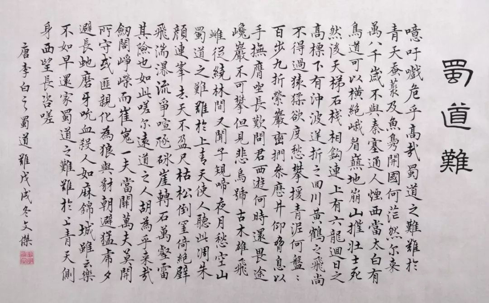

经典流传·唐诗宋词

蜀道难
[唐]
李白
噫吁嚱，危乎高哉！
蜀道之难，难于上青天！
蚕丛及鱼凫，开国何茫然！
尔来四万八千岁，不与秦塞通人烟。
西当太白有鸟道，可以横绝峨眉巅。
地崩山摧壮士死，然后天梯石栈相钩连。
上有六龙回日之高标，下有冲波逆折之回川。
黄鹤之飞尚不得过，猿猱欲度愁攀援。
青泥何盘盘，百步九折萦岩峦。
扪参历井仰胁息，以手抚膺坐长叹。
问君西游何时还？畏途巉岩不可攀。
但见悲鸟号古木，雄飞雌从绕林间。
又闻子规啼夜月，愁空山。
蜀道之难，难于上青天，使人听此凋朱颜！
连峰去天不盈尺，枯松倒挂倚绝壁。
飞湍瀑流争喧豗，砯崖转石万壑雷。
其险也如此，嗟尔远道之人胡为乎来哉！
剑阁峥嵘而崔嵬，一夫当关，万夫莫开。
所守或匪亲，化为狼与豺。
朝避猛虎，夕避长蛇，磨牙吮血，杀人如麻。
锦城虽云乐，不如早还家。
蜀道之难，难于上青天，侧身西望长咨嗟！
蜀道之难，难于上青天！
蚕丛及鱼凫，开国何茫然！
尔来四万八千岁，不与秦塞通人烟。
西当太白有鸟道，可以横绝峨眉巅。
地崩山摧壮士死，然后天梯石栈相钩连。
上有六龙回日之高标，下有冲波逆折之回川。
黄鹤之飞尚不得过，猿猱欲度愁攀援。
青泥何盘盘，百步九折萦岩峦。
扪参历井仰胁息，以手抚膺坐长叹。
问君西游何时还？畏途巉岩不可攀。
但见悲鸟号古木，雄飞雌从绕林间。
又闻子规啼夜月，愁空山。
蜀道之难，难于上青天，使人听此凋朱颜！
连峰去天不盈尺，枯松倒挂倚绝壁。
飞湍瀑流争喧豗，砯崖转石万壑雷。
其险也如此，嗟尔远道之人胡为乎来哉！
剑阁峥嵘而崔嵬，一夫当关，万夫莫开。
所守或匪亲，化为狼与豺。
朝避猛虎，夕避长蛇，磨牙吮血，杀人如麻。
锦城虽云乐，不如早还家。
蜀道之难，难于上青天，侧身西望长咨嗟！
关于作者

李白
（701年－762年），字太白，号青莲居士，又号“谪仙人”，是唐代伟大的浪漫主义诗人，
被后人誉为“诗仙”，与杜甫并称为“李杜”，为了与另两位诗人李商隐与杜牧即“小李杜”区别，
杜甫与李白又合称“大李杜”。其人爽朗大方，爱饮酒作诗，喜交友。
李白深受黄老列庄思想影响，有《李太白集》传世，诗作中多以醉时写的，代表作有 《望庐山瀑布》、《行路难》、《蜀道难》、《将进酒》、《梁甫吟》、《早发白帝城》等多首。 李白所作词赋，宋人已有传记（如文莹《湘山野录》卷上），就其开创意义及艺术成就而言， “李白词”享有极为崇高的地位。
李白深受黄老列庄思想影响，有《李太白集》传世，诗作中多以醉时写的，代表作有 《望庐山瀑布》、《行路难》、《蜀道难》、《将进酒》、《梁甫吟》、《早发白帝城》等多首。 李白所作词赋，宋人已有传记（如文莹《湘山野录》卷上），就其开创意义及艺术成就而言， “李白词”享有极为崇高的地位。
诗词排行榜
友情赞助